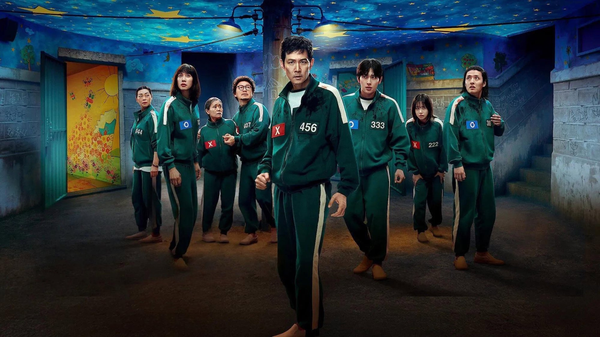
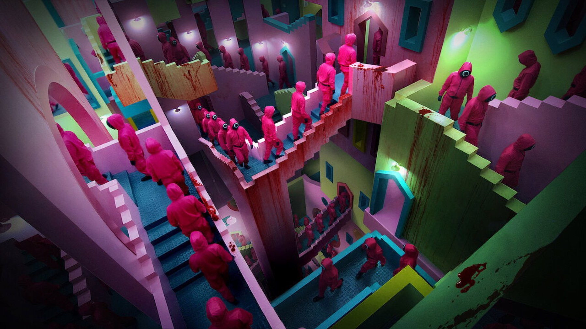
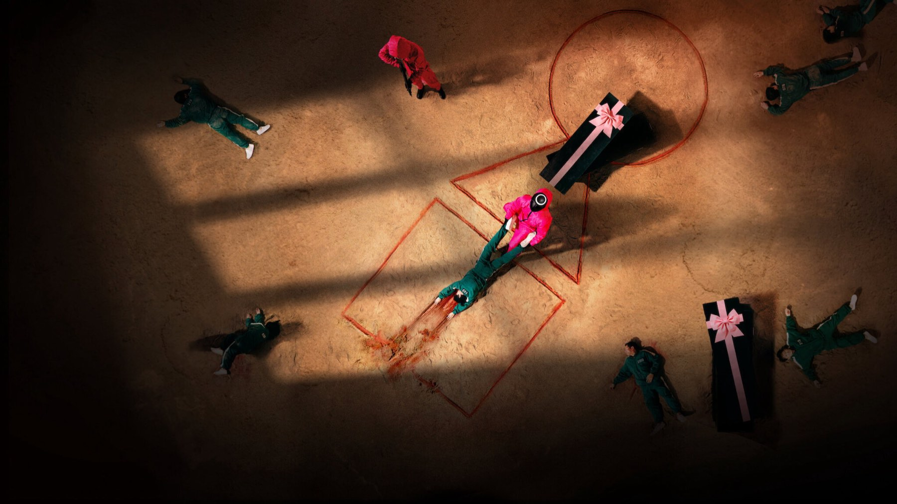

Squid Game – Stagione 2
Il voto con la O e la X sposta l'orrore dai giochi al dormitorio: la seconda stagione ha un'idea forte, ma la usa a metà e si ferma sul più bello
Dopo ogni gioco i sopravvissuti si mettono in fila davanti a due pulsanti, uno con la O e uno con la X, e votano: si continua o si torna a casa dividendosi il montepremi? Poi tornano nel dormitorio con un adesivo sul petto, una O blu o una X rossa, che dice a tutti da che parte stanno. È la trovata più cattiva di Squid Game 2, quindi anche il motivo per cui, nonostante i difetti, vale la visione: qui il mostro smette di essere la bambola che spara e diventa la maggioranza.
Però Hwang Dong-hyuk ci mette tre episodi ad arrivarci, e quando la tensione finalmente sale i titoli di coda chiudono tutto. Perché? I sette episodi usciti su Netflix il 26 dicembre 2024 sono la prima metà di un racconto girato tutto insieme, tra luglio 2023 e giugno 2024, e solo dopo diviso in due. Allora si capisce ogni scelta di ritmo, ma capirla non basta a perdonarla.
Di cosa parla la seconda stagione di Squid Game?
Senza spoiler: Seong Gi-hun, il giocatore 456 di Lee Jung-jae, ha vinto i soldi ma non li usa per vivere. Invece li spende per dare la caccia al Reclutatore, l'uomo elegante di Gong Yoo che nella prima stagione lo aveva invitato a giocare a ddakji. Quando lo trova, Gi-hun si fa riportare sull'isola come concorrente, perché vuole far saltare i giochi dall'interno.
Dall'altra parte c'è il Front Man di Lee Byung-hun, che decide di scendere in campo di persona: si mette la tuta verde con il numero 001 e si presenta a Gi-hun come un concorrente qualunque. Intanto il detective Hwang Jun-ho (Wi Ha-joon) cerca l'isola in mare, e la guardia Kang No-eul (Park Gyu-young) porta lo sguardo dentro l'organizzazione.
I volti nuovi sono tanti. Lee Myung-gi (Yim Si-wan), il 333, è quello che tutti conoscono come «MG Coin». Accanto a lui ci sono Kang Dae-ho (Kang Ha-neul), il 388, e Cho Hyun-ju (Park Sung-hoon), la 120. Il più rumoroso però è Choi Su-bong (T.O.P), il 230, che si fa chiamare Thanos.

Cosa funziona davvero?
Il primo episodio contiene il momento più crudele dei sette, eppure non succede sull'isola. Il Reclutatore gira per la città e offre a chi vive per strada una scelta: un pezzo di pane oppure un biglietto della lotteria. Chi sceglie la fortuna, però, vede distruggere il cibo che ha lasciato sul tavolo. Poi, nella sfida con uno degli uomini che lavorano per Gi-hun, unisce la morra cinese alla roulette russa. Gong Yoo resta in scena pochi minuti, ma costruisce un sadico gentile e sorridente che non abbiamo dimenticato.
Il voto, come dicevamo, è l'idea che dà un senso ai sette episodi. Ogni prova riapre la stessa ferita: chi ha debiti vuole continuare perché non ha altro, chi ha paura vuole uscire. Così Gi-hun scopre che la sua missione dipende da una manciata di schede. Nel dormitorio la O e la X diventano due tribù, mentre il pavimento si accende di luce blu da una parte e rossa dall'altra, come un confine disegnato per terra. Allora le liti tra le brande fanno più paura di qualsiasi gioco.
Lee Byung-hun, infine, è la miglior ragione per guardare. Il suo 001 è un compagno di branda affabile e premuroso, ma noi sappiamo per tutto il tempo chi c'è sotto la tuta. Quindi ogni scena tra lui e Gi-hun diventa una partita a carte scoperte per lo spettatore e coperte per il protagonista: è la tensione più raffinata dell'intera serie.
La scena che vale la visione
Il pentathlon a sei gambe del quarto episodio. Squadre di cinque giocatori, legati per le caviglie, devono superare in cinque minuti una serie di giochi tradizionali dei bambini coreani. Per la prima volta in Squid Game, quindi, per salvarsi bisogna aiutarsi invece di eliminarsi. La squadra di Hyun-ju passa perché ognuno sostiene chi resta indietro, e il suo esempio trascina le altre: sopravvivono in tanti. Per qualche minuto la serie sembra credere negli esseri umani. Poi però arriva il voto, e una maggioranza ancora più larga sceglie di continuare perché il montepremi non basta. In quel passaggio, dalla mano tesa alla scheda, c'è tutto Squid Game 2.
Il fatto che cambia come la guardi
Hwang Dong-hyuk ha spiegato al Korea Times, nel novembre 2024, che il voto con la O e la X nasce dai conflitti di oggi: la guerra in Ucraina e le divisioni tra generazioni e tra ragazzi e ragazze in Corea. Per questo ha voluto gli adesivi sul petto e le luci colorate sul pavimento.
Poi la realtà lo ha raggiunto. A gennaio 2025, due settimane dopo l'uscita, ha raccontato al JoongAng Daily di aver avuto i brividi vedendo a Seul favorevoli e contrari all'impeachment del presidente quasi venire alle mani, separati dalle transenne della polizia: gli sembrava una scena della sua serie. Perciò, rivista oggi, la fila davanti ai due pulsanti somiglia meno a un gioco e più a una piazza.
La nostra sintesiQui il mostro smette di essere la bambola che spara e diventa la maggioranza.

Dove non convince?
La partenza è lentissima. I primi due episodi seguono la caccia al Reclutatore e la ricerca dell'isola, mentre solo nel terzo torna «Un, due, tre, stella!» con la bambola gigante del 2021. Nel frattempo la serie ci ripete quello che sapevamo già, cioè che Gi-hun è ossessionato e che l'isola è nascosta. È un lungo antefatto per una partita di cui conosciamo già le regole.
La trama del detective Jun-ho è l'anello debole. Ogni volta che il montaggio lascia l'isola per salire sulla barca la tensione cala, perché per sette episodi questa linea non produce quasi nulla. Lo stesso vale per molti nuovi concorrenti: Thanos funziona come caricatura e poco più, mentre Hyun-ju ha un arco vero. Ma anche il voto, la nostra idea preferita, rende meno ogni volta: dopo il pentathlon lo schema è lo stesso della prima votazione, con gli stessi argomenti in bocca agli stessi personaggi. Il meccanismo si ripete senza crescere, proprio quando dovrebbe stringere.
Poi c'è il finale. Senza svelare niente: l'ultimo episodio si interrompe nel mezzo di una svolta, quindi chi lo guardava a dicembre 2024 ha dovuto aspettare sei mesi per sapere come andava a finire. Federico Vascotto su Movieplayer.it, che dà 4 su 5, descrive il finale come un ponte verso la conclusione. Ha ragione, però per noi non è un complimento.
Com'è rispetto alla prima e alla terza stagione?
Il debutto del 2021 aveva nove episodi e l'effetto sorpresa: ogni gioco era una scoperta. Il seguito ne ha sette e lo sa, quindi cambia bersaglio e lavora sulla politica del gruppo invece che sullo choc. Risulta meno compatto ma più ambizioso nelle idee. La conclusione, uscita il 27 giugno 2025, raccoglie il lavoro seminato qui e lo chiude con episodi più duri e più frettolosi (ne abbiamo scritto nella nostra recensione della terza parte). Perciò, visti in fila, questi due capitoli formano un racconto unico con un centro lento e una fine che corre.
Il pubblico, invece, non ha esitato. Squid Game 2 ha raccolto 68 milioni di visualizzazioni nella prima settimana di classifica Netflix, superando i 50,1 milioni d'esordio di Mercoledì, ed è arrivata prima in oltre novanta Paesi. Ha avuto una candidatura ai Golden Globe come miglior serie drammatica. A ottobre 2026 su Rotten Tomatoes le recensioni positive sono l'84% su 98, su Metacritic la media è 62 su 100 da 36 recensioni.
Vale la pena vederla?
Sì, a una condizione: guardatela solo se avete già pronta la terza, perché da sola vi lascia a metà. Ve la consigliamo se dalla prima stagione avete amato le dinamiche tra i giocatori più dei giochi, e se avete pazienza per i primi due episodi. Se cercate la sorpresa del 2021, invece, qui troverete soprattutto un'eco. Tutte e tre le stagioni sono su Netflix.
Squid Game 2 è la metà lenta e incompiuta di una storia sola, ma il voto con la O e la X è l'idea più crudele che Hwang Dong-hyuk abbia avuto dopo la bambola.
Domande frequenti
Quanti episodi ha Squid Game 2?
Sette, due in meno del debutto del 2021, pubblicati tutti insieme su Netflix il 26 dicembre 2024.
Squid Game 2 ha un finale?
No, si interrompe a metà racconto: la storia continua e si chiude in Squid Game 3, uscito il 27 giugno 2025. I due capitoli sono stati girati insieme tra luglio 2023 e giugno 2024.
Dove vedere Squid Game 2?
Su Netflix, dove sono disponibili tutte e tre le stagioni.
Fonti consultate (7)
- Wikipedia – Squid Game season 2
- Multiplayer.it – Squid Game 2, recensione (Christian Colli)
- Movieplayer.it – Squid Game 2, recensione (Federico Vascotto)
- Il Post – Cosa si dice della seconda stagione di Squid Game
- The Korea Times – Squid Game Season 2: tragedy fueled by satire on divisive society
- Korea JoongAng Daily – Squid Game director says Korea's impeachment rallies mirror show's latest season (Kim Ji-ye)
- TMDB – Squid Game, scheda e dove vederlo in Italia